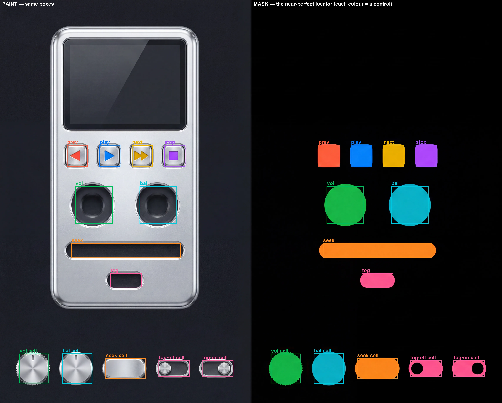
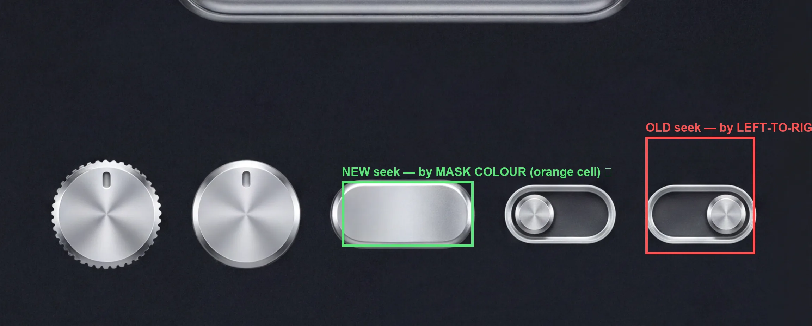

How correlation reads the mask — and exactly where I broke it
You're right: the mask is a near-perfect locator, so a wrong sprite is inexcusable. Here is the whole thing, nothing hidden — what the mask says, what my code read, the exact line that was wrong, and the fix.
1 · The mask IS a near-perfect locator

LEFT = paint, RIGHT = mask. The SAME extracted boxes drawn on both. Every colour in the mask is one control; every box sits on its blob AND on the matching painted control. Device row + knob sockets + seek track + toggle, then the sprite strip cells below. The locator is good.
So how did seek get a toggle? Because for the sprite strip cells I was not reading the mask at all. The device regions (buttons, sockets, seek track) were correlated by mask colour — correct. But the strip cells went through a different, worse path.
2 · The exact bug
An earlier generation (run6) had the model omit the strip cells from the mask. To cope, I wrote a fallback: detect the silver parts in the PAINT strip and assign them left-to-right by ORDER — parts[0]=vol, parts[1]=bal, parts[2]=seek, …
That fallback then kept running even when the mask DID have the strip cells, and it overrode the good mask reading. So the strip identity came from column position, not colour.
When the paint's part detection merged/shifted a run, the order slipped and seek landed on the 5th part — a toggle. A perfect orange "seek" cell was sitting right there in the mask, ignored.

GREEN = correct seek, by MASK COLOUR (the orange cell). RED = what the OLD left-to-right-order code grabbed: a toggle. The mask never got this wrong — my code did, by not using it.
The fix — correlate the strip by mask colour, like everything else. Read each part's cell from its own hue (orange = seek), and only fall back to paint-detection for a cell the mask genuinely omitted:
- # strip identity by left-to-right ORDER (overrode the mask)- regs[name]["strip"] = [parts[i]] # parts[2] → seek (grabbed a toggle)+ # strip identity by MASK COLOUR (orange cell → seek), largest connected component+ stripmask = (assign==colour_of[name]) & (y >= devFrac)+ regs[name]["strip"] = [largest_cc_bbox(stripmask)]+ # paint-detection kept ONLY as a fallback for a cell the mask omitted
Same fix pattern killed the prev-button bug (its box was inflated by stray red pixels → now largest connected component only) and it's why placement now lines up.
3 · Why global felt more consistent (you're right)
Global BiRefNet mattes the whole image in one pass and reads the parts as connected-component islands of the actual matte — so it never depended on my fragile per-cell ordering. My per-cell path had the extra assignment step that I broke. That's a real reason global was steadier here, on top of it being one cheap call. The trade is the one on the compare page: global is coarser on small parts and can clip a protrusion; per-part is cleaner but 2.4× the cost.